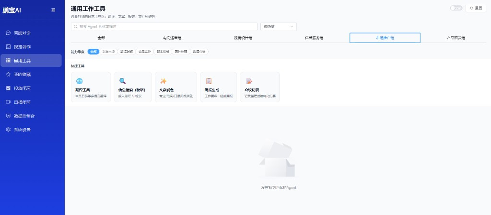

架构升级
- 接入海内外大模型 API，全局上下文记忆 + 多模态意图路由
- 多文件批量处理、高阶工作流编排
- Python 自定义代码节点扩展业务能力
数据闭环
轻量化 RLHF：用户点赞/差评反馈驱动知识库迭代与 Prompt 优化。
业务成果
- 直播合规话术、数据智能点检、跨境翻译等 10+ 场景 Agent
- 周报、脚本产出从小时级 → 秒级
技术栈：Dify · RAG · OpenRouter · 硅基流动 · Python · Cursor / Claude Code
基于 Dify 重构企业 AI 基座，从单文本助手升级为多模态 AI 中枢，落地 10+ 垂直业务 Agent。
轻量化 RLHF：用户点赞/差评反馈驱动知识库迭代与 Prompt 优化。
https://1xovox1.github.io/PengBaoAI
鹏宝 AI 智能对话与通用工作工具工作台，供业务同学日常使用与验证。
温馨提示：因 GitHub 访问限制，若链接打不开，可开启 VPN 后查看。
